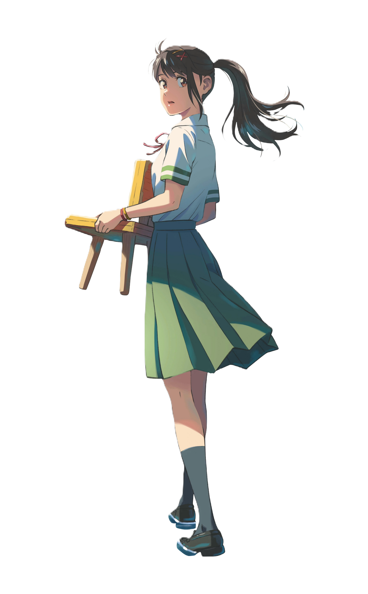

2022
Suzume
No
Tojimari
No
Tojimari
Suzume adalah film petualangan fantasi animasi Jepang tahun 2022 yang diproduksi oleh CoMix Wave Films dan diedarkan oleh Toho. Film ini menggambarkan seorang gadis SMA dan seorang pemuda misterius yang mencoba mencegah terjadinya rentetan bencana di penjuru Jepang. Film ini mulai digarap pada tahun 2020, ditulis dan disutradarai oleh Makoto Shinkai.
Author: Makoto Shinkai
Author: Makoto Shinkai